Creating a play button
In the previous steps, we created a background, a game title and added some Sprites to make it look more interesting. Next, we need to add a button. When the button is pressed, we need to load the Scene object that holds the logiv for our game.
Adding a Play button
Adding a button, or adding button like functionality can be done in several ways. You can use a Button node from the Node Library panel. You can use a Sprite and make it act like button. Both are fine ways to achieve our goal. For this example, let's use a Button node from the Node Library panel.
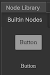
First, from the Node Library panel, drag and drop a Button on to the Background node in the Node Tree panel.
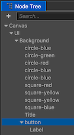
Second, rename the label to Play in the Node Tree panel.
Third, change the Label of the Play button to Start Game.
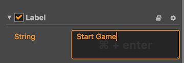
Last, with Play selected, change some properites for the button. This should include position, size, color, etc. Make it look how you wish. I stuck with the default properties for the purpose of this demo.

Making the Play button work
Now that we have a button, we need to make it run code when we click it.
First, select the Play button so that some properties can be added. Scroll down in the Properties panel until you see this:
Second, use the editor to add a click event:
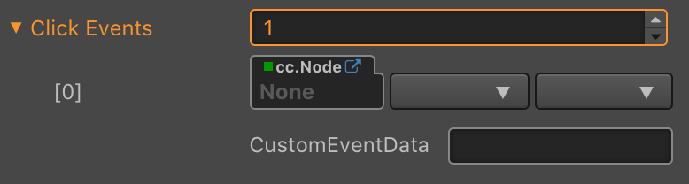
Third, create a new JavaScript file called MenuScreen.js. This is where any code we need for this
Scenewill go. We will add our Play buttons logic here. You can do this by right clicking on the Script folder in the Assets Panel and selecting Create --> JavaScript.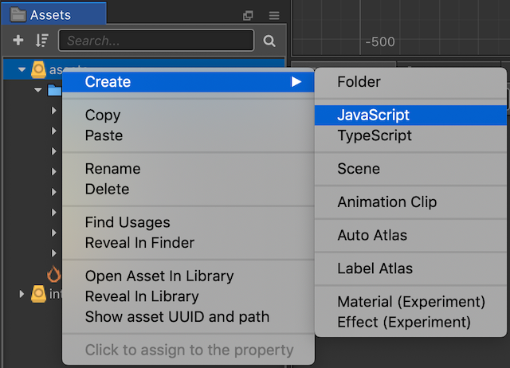 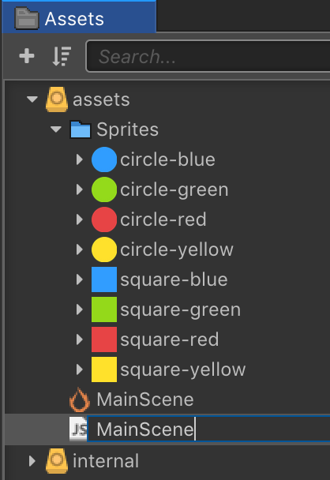
Fourth, click the Add Component button in the Properties panel and select Add Custom Component so we can add the newly created MainScene.js as a component of our Play button.
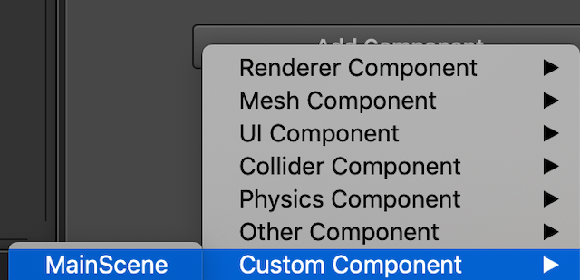
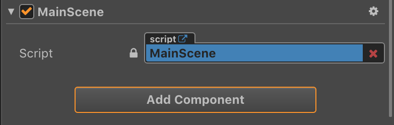
Fifth, we need to add a callback to the MainScene.js so that we specify what code is to be run when the Play button is clicked. Double clicking on the MainScene.js will open it in the default external text editor specified by your operating system. Add the following callback:
callback: function (event) { console.log("play button clicked..."); },We end up with a a Javascript file that looks like:
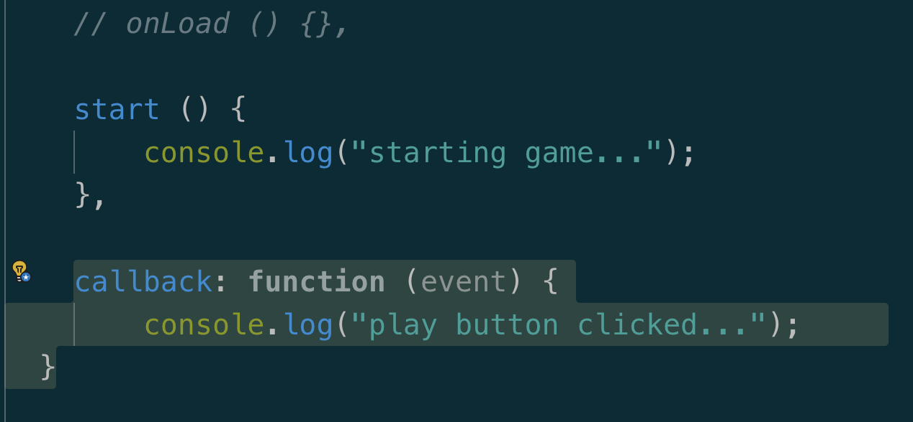
Next, we need to tell the editor that when our Play button is clicked we need to run a certain chunk of Javascript code. This is easily done by dragging a reference to the button to the properties dialog. Then you select the MainScene.js file and the function you want to run. In our case we called it callback:. Selecting a better name when your needs get complex is probably a good idea. Example:

Last, your Properties panel should look like this when completed:
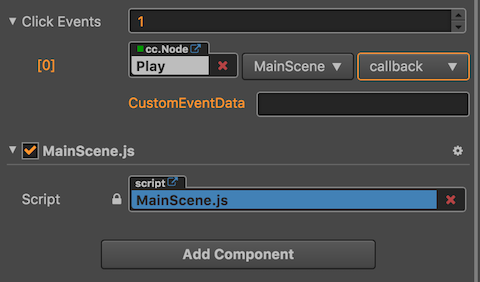
When we run our game and click the Play button we should see that it works:
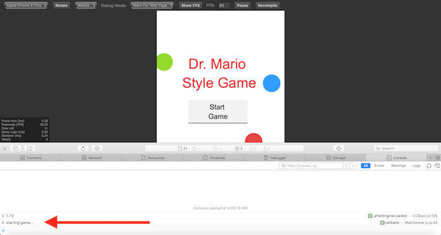
We will come back and add more code to this button later. For now, our button works when pressed. Let's move on to creating our main game scene, where the bulk of our game play will take place.
Task: Now is a good time to save your project! From the File menu, select Save Scene or use your operating system's shortcut key.
We can now move on to the ending of this chapter...